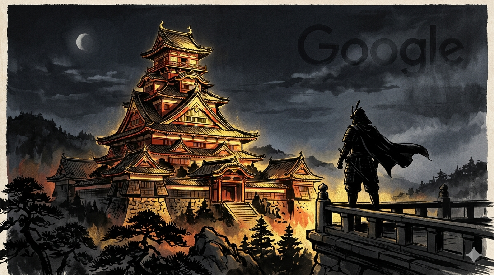
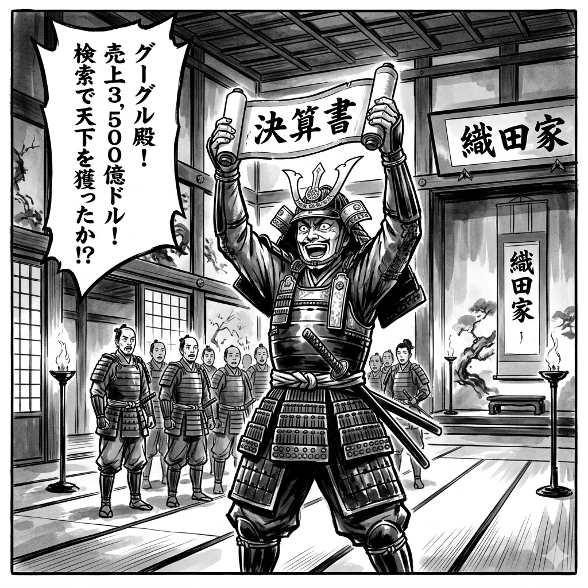
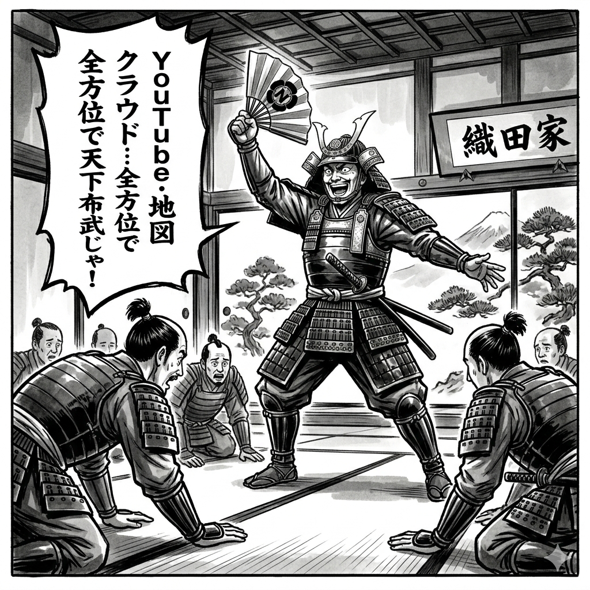
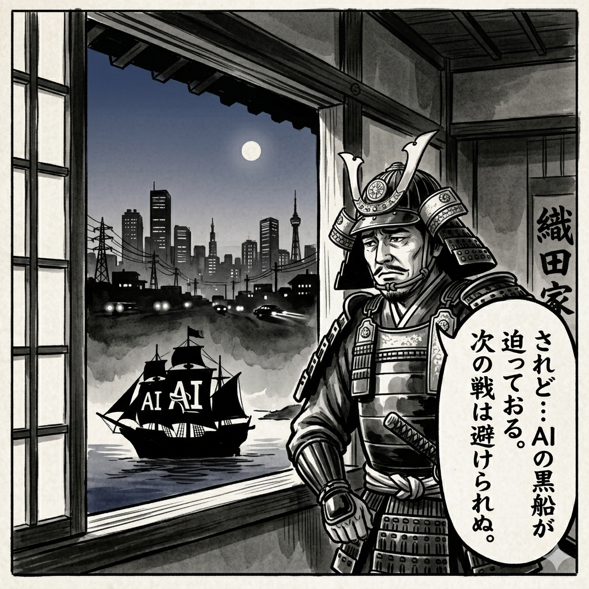
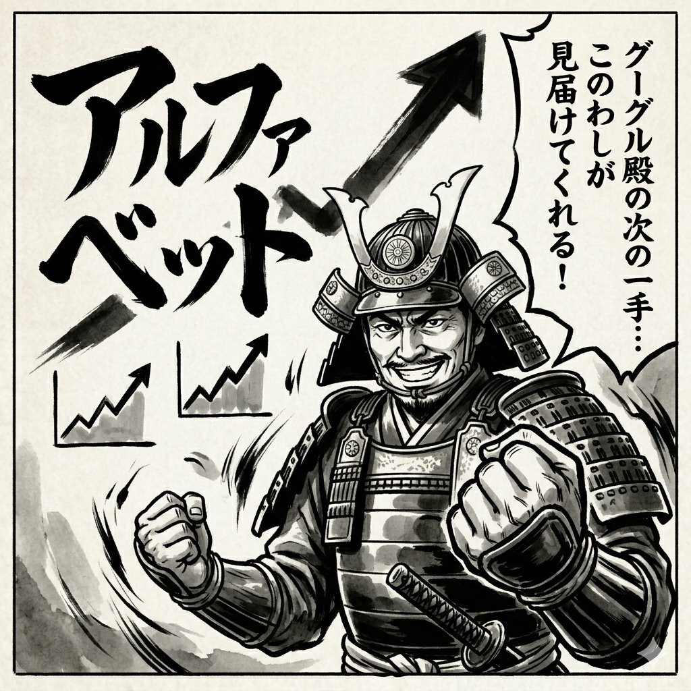

Alphabet（Google）2024年12月期決算 ｜ 城主：織田信長

| 項目 | 数値 |
|---|---|
| 売上高 | 約3,503億ドル（前年比+9%） |
| 営業利益率 | 約27% |
| 自己資本比率 | 約65% |
| FCF | 年500億ドル超（超潤沢） |
| CEO | Sundar Pichai（スンダー・ピチャイ） |
決算書の一次情報はここで確認できます
▶ Alphabet IR公式サイト



PL（兵糧）分析
売上高3,503億ドルは、日本円換算で約52兆円（1ドル＝150円換算）。日本最大企業トヨタの売上45兆円を上回る規模。
営業利益率27%は広告事業の圧倒的な利益率が支える。ただし広告依存（売上の77%）は景気後退時の急減速リスクが存在する。クラウド部門（Google Cloud）は前年比+45%成長で年間収益が約440億ドルに拡大。黒字化も達成し、AWSとAzureへのキャッチアップが本格化している。
BS（石垣）分析
自己資本比率65%は、GAFAM5社の中でもトップクラスの堅固さ。現金・短期投資の保有額は約1,000億ドル超。「現金の城」とも言える財務要塞。有利子負債は限定的で、財務リスクは事実上ゼロに近い。
CF（堀の水）分析
フリーCFは年500億ドル超（約7.5兆円）。自社株買い規模は年700億ドルを超えることもあり、EPS（1株利益）を人為的に押し上げる構造を持つ。配当は実施しているが利回りは低く、成長企業の姿勢を維持。
FIREスコア内訳
| 軸 | スコア | コメント |
|---|---|---|
| BS強度 | 88点 | 自己資本65%・現金ダム保有 |
| CF安定性 | 90点 | FCF超潤沢・年500億ドル |
| PL収益性 | 85点 | 営利率27%・広告一強からの多角化 |
| 成長性 | 88点 | クラウド+45%・AI投資加速 |
| 総合 | 88点 | 激走候補（SS） |
城代の総評
安土城の石垣は現金で満たされ、弾薬庫（FCF）は年500億ドルと底をつかない。信長の本質は「変化を自ら引き起こす者」。AI時代の波を恐れるのではなく、波を自分で起こそうとしているGoogleは、まさに織田信長の城主に相応しい。
唯一の懸念は、規制当局という「明智光秀」の存在。検索独占を巡るDOJ訴訟の行方次第では城の構造が変わる可能性がある。長期保有は魅力的だが、規制リスクを常に確認すること。